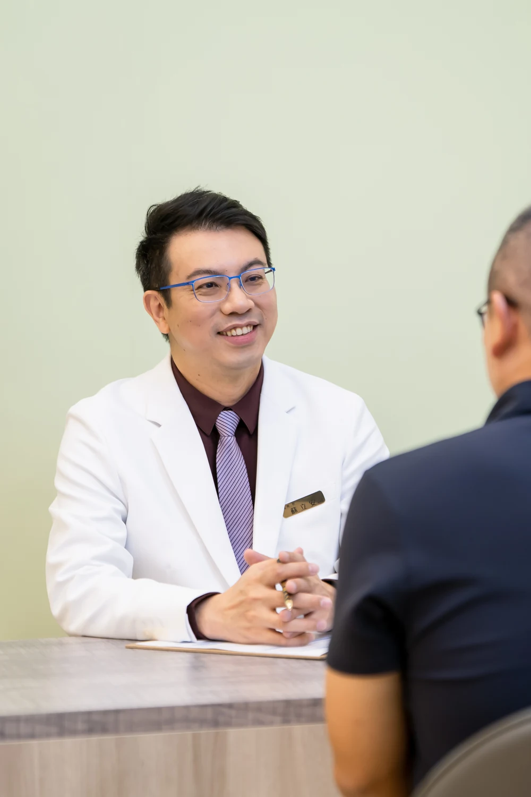

Founder & Medical Director
Dr. Tony Su
He writes the protocols, trains the teams, and sees patients himself.
Approach
Calibration over catalogue.
Dr. Su’s position is simple: a patient receives what their biology asks for, at the pace their life allows — not the package on offer. Every protocol used across the network is written and reviewed by him, and reviewed again when the evidence moves.
Publications & Training
Trained where the margin for error is smallest.
General internal medicine, critical care, chest speciality and emergency medicine in Taiwan first — then cellular medicine in Japan. The order matters: acute-care judgement came before the regenerative medicine for longevity and healthspan.
- Board Certification Internal Medicine — Taiwan Taiwan
- Board Certification Precision Medicine, since 2021 Taiwan
- Cellular Therapy Fellowship Dendritic cell therapy under Prof. Hasumi Japan, 2018
- Cellular Therapy Fellowship Osaki Method NK cell therapy under Prof. Masuyama Japan, 2022
- Postgraduate Training Precision Oncology, Cancer Genomics & Immuno-Oncology Harvard Medical School
- Fellowship American Academy of Anti-Aging Medicine (A4M) 2022
- Professional Memberships American College of Physicians Ongoing

A regenerative plan should follow bloodwork, not a brochure. That is the standard I hold every R2-IWAA physician to.
Languages
- MandarinNative. First language of practice, in Taipei.
- EnglishClinical fluency for international patients and referring physicians.
- MyanmarConsultation-level, for patients from Yangon and the diaspora.
Training network
- TaipeiMain centre. Protocols are written and materials prepared here.
- YangonPartner care at Beauty Bank Wellness & Cell Therapy Center.
- Ho Chi MinhPartner care at Recover Health and M VITA.
Protocols authored by Dr. Su
Every formula, one physician’s hand.
The IV programme across every R2-IWAA location is authored by Dr. Su and reviewed each time the evidence moves. Every plan is set to a patient’s bloodwork rather than a menu.

VIP service
One patient at a time.
Consultations are private and unhurried, in Mandarin, English or Myanmar. Travelling patients are looked after from the first message to the last review.
Request a consultation →